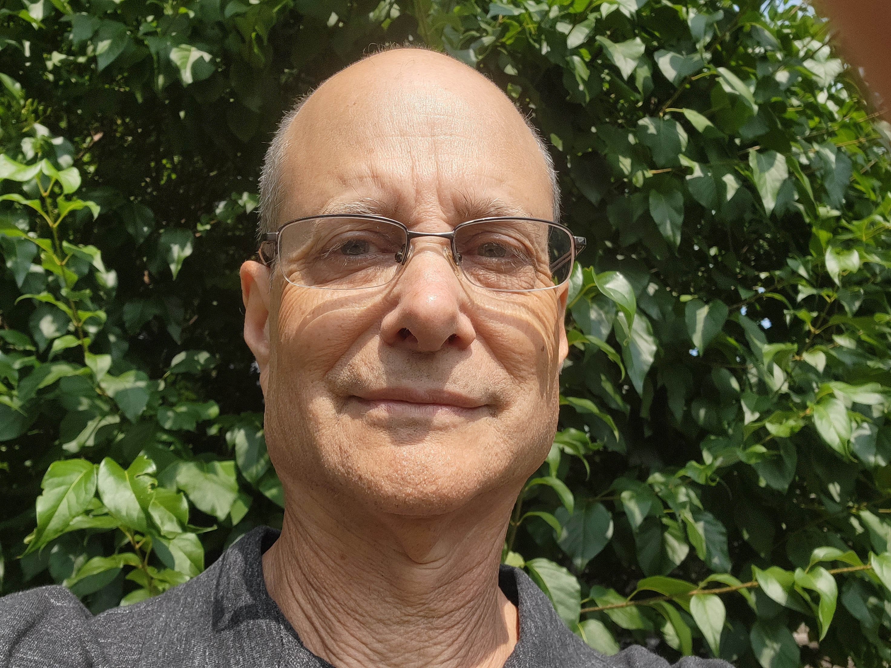

Web Developer/Mine Falls Web Founder
Objective
With the combination of my Software Testing experience and my Web Development skills,
I plan to create state-of-the-art online Web Stores with artificial intelligence (AI) assistance.
Technical Skills
- AI Tools: Google Gemini, Microsoft Copilot
- Build Tools: Github, Jenkins
- Database Tools: IBM DB2, Microsoft SQL Server, MySQL, Oracle
- IDEs: Eclipse, Microsoft Visual Studio, Microsoft Visual Studio Code, Pycharm
- Languages: ‘C’, C#, CSS, COBOL, HTML, Java, JavaScript, JCL, Python, PHP
- Operating Systems: IBM z/OS, Linux, MacIntosh, Microsoft Windows
- Test Automation: Microsoft Playwright, Postman, Ranorex Studio, ReadyAPI, Selenium WebDriver
- Test Case Management: Azure DevOps, IBM DOORS, JIRA, QMetry, Rational ELM, TestLink, TestRail, Xray, Zephyr Scale
- Test Tools: ADB Logcat (Android), PyTest
LinkedIn Profile
Professional Experience
Mine Falls Web CEO & Founder November 2025 - Present
Creating Web Stores with HTML, PHP, JavaScript, and AI.
Vibrantech: (Remote: Full Time) Sr. SW Test Automation Engineer January 2025 - November 2025
Purisolve: (Remote Contract) Sr. SW Test Automation Engineer January 2025 - November 2025
Supported an IRS modernization project (Assembly Code to Java) as a shift-lead, responsible for monitoring
jobs processing on an IBM z/OS mainframe as well as conducting daily standups and creating/emailing bi-weekly
and monthly status reports to IRS management. Wrote and published a document on shift-lead activities during a shift.
Enterprise Iron - (Remote: Contract) Software Test Lead August 2023 - August 2024
Supervised a small team of testers on a government project evaluating the conversion of procedural Java code to
Object-Oriented Java code for form 5500 on an IBM Mainframe. Wrote a QA test strategy document. Created, executed,
reviewed, and approved defects and test scripts in Rational ELM (Engineering Lifecycle Management). Wrote instructional
test documentation for the team, trained the team on ELM, and conducted a daily QA meeting. Developed tests based on COBOL
and JCL, evaluated JESMSG test logs and compared test results in SuperCE. Modified SQL data in QM and FD. Participated in
Performance and Volume testing for filing season 24 using ControlM. Tracked project metrics with Microsoft Excel Pivot Tables.
Sensitech - (Remote: Contract) Senior SQA Engineer September 2022 - February 2023
Developed and executed WebAPI tests against Sensitech’s ColdStream Select application with SmartBear's ReadyAPI and Postman.
Tested SensiWatch Platform’s ability to monitor the transportation of product during inbound/outbound trips. Wrote test cases
in Zephyr Scale. Rewrote some test automation in C# .NET in Microsoft Playwright. Wrote defects in JIRA. Executing regression tests.
Delta Dental of California - (Contract) Python Test Automation Engineer May 2022 - September 2022
Modified PyTest scripts for API testing of Delta Dental member profiles written by Luxsoft, verifying that the data from
the legacy environment matches the data read by the API in the newer environment. Team lead running daily standups and
acting as the voice of the team for upper management. Creating defects in JIRA.
Teradyne - (Contract) .NET Test Automation Engineer September 2021 - April 2022
North Reading, MA
Created an automation framework in C# .NET 4.8 using Ranorex to test the functionality of the Halos robot application
that controls a live machine and a virtual machine running tests against semiconductor devices. Performed manual testing
by executing and reworking test cases within test plans. Created defects in JIRA.
Philips Healthcare - (Contract) Software Quality Assurance Engineer January 2021 - July 2021
Cambridge, MA
Member of V&V team, manually testing Patient Monitoring Information Center (PIC) using Microsoft Test Manager (MTM)
with a variety of clinical devices in an FDA/CE mark environment testing on mobile devices.
Studied TEDs documentation. Performed regression testing in Azure Devops. Updated, maintained, and configured a
multi-tier server configuration that included Patient Bedside Monitors, virtual servers, and stand-alones.
Shark Ninja (Hybrid: Contract) Python Test Automation Engineer July 2020 - November 2020
Needham Heights, MA
Performed docking tests on Shark’s newest robot vacuum cleaners embedded software. Implemented test tools in Python
in venv or pyenv via terminal and Visual Studio Code including a graphing tool, a remote log copier, and a robot
identification tool. My infinite docking tool reduced the amount of time to create tracking graphs by 80%. Also
created/executed unit tests in Pytest.
Volicon - (Contract) Senior Software Quality Assurance Engineer January 2018 - July 2018
Burlington, MA
As part of the Observer test team, doing manual testing on a TS (transport stream)/OTT (over-the-top)
digital media application used to capture and analyze commercial broadcast video clips. Wrote/executed
test cases, produced a user manual, and entered defects in JIRA. Used browser development tools and encoder
logs to discover errors/exceptions. Executed SQL scripts, reading and updating records.
Brightcove (Contract) Software Quality Assurance Engineer September 2017 - November 2017
Boston, MA
Manually tested a web streaming mobile video application on Android and iOS devices. Also performed cross-browser
testing, as well as Chromecast testing.
DEVEXI - (Remote) Lead Software Quality Assurance Engineer November 2016 - January 2017
Successfully tested Devexi, a health and medical research platform used to generate sophisticated
epidemiological studies from acquired data in multiple research libraries. Converted user stories
into test cases in QMetry. Created cohort and case-control longitudinal studies based on exposures
and outcomes. Performed native mobile application testing on iOS and Android devices.
SessionM (now MasterCard) Senior Quality Assurance Engineer March 2016 - September 2016
Boston, MA
QA project lead, manually testing a native loyalty mobile application on Android and iOS devices.
Linked requirements with test cases in Test Link, and later Test Rail. Performed backend testing with
Sequel Pro, and API testing in Postman/cURL. Learned Java for Selenium Webdriver automation. Unit tested
Ruby code using rSpec. Mentored junior engineers and college interns. Reviewed API design specifications.
IHRDC Lead Software Quality Assurance Engineer July 2013 - January 2016
Boston, MA
QA lead on Competency Management Team writing/manually executing test cases against a web application that
assesses competency gaps and verifies employee compliance with local government and company regulations in the
oil and gas industry. Directed a test team in Malaysia and collaborated with technical staff (including product
owner/business analyst and developers on scrum projects). Performed backend testing on a Microsoft SQL Server 2008
r2 database. Acted as Scrum master, tracking defects in JIRA. Communicated application quality to management.
Prior to and including 2013
Constitution Medical (Roche Diagnostics):
Validated and verified blood analyzer functionality for clinical trials.
Medventive (McKesson):
Authored and executed test cases on a physician/patient compliance application using registry
guidelines for preliminary Medicare claims processing. Compared front-end/backend results via SQL queries.
TJX: Verification of register printed receipt output for Point-Of-Sale transactions; (Euro, American, and Canadian).
Setup and maintenance of test environment. Execution of nightly Silktest scripts.
Tyco International - Test Automation Engineer:
Repaired Micro Focus Test Partner automation scripts written in Visual Basic.
nSphere: Test Automation Engineer:
Reduced regression test time from 1-1/2 days to 3-5 minutes.
AIR Worldwide: Lead Software Quality Assurance Engineer
Coordinated multiple releases of a SaaS application,
performed automated testing with MiroFocus Test Partner on home insurance valuation software. Created/maintained a three-tier
architecture test environment, planned test schedules and test strategies within project scope and delivery dates.
Comverse Network Systems: Senior Software Quality Assurance Engineer
QA project lead on telephony load test team,
testing Interactive Voice Recognition using Voice Activated Dialing to access a Personal Address Book on a multi-tier system.
On-site QA lead at Panafon in Greece for product upgrade/rollback. QA process improvement lead, acting on behalf of VP of Engineering
for ISO-9001 audit. Led team of QA engineering leads and managers in creating, updating and publishing documentation about QA practices
for an ISO 9001 audit.
Web Portfolio
Education
Daniel Webster College - C Language, Visual Basic
Fitchburg State University - Bachelor of Science in Communications Media, specializing in Television Production
New Hampshire Vocational - Technical College – Associates in Applied Science - Industrial Electronics
Rivier University - Graduate Level Computer Science Courses: Data Structures (Pascal) and Problem Solving